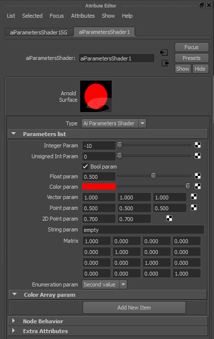
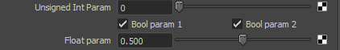
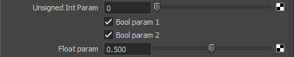

在本文中，我们将向着色器中添加更多不同的参数，这些参数将集成到 Maya 界面中。这样，我们便可方便地在 Maya 中修改着色器。
我们可以将一个新的着色器添加到先前在创建着色器加载器中创建的着色器加载器：
首先，创建着色器：
parametersShader.cpp
#include <ai.h>
AI_SHADER_NODE_EXPORT_METHODS(ParametersShaderMtd);
namespace
{
enum ParametersShaderParams { p_int, p_uint, p_bool, p_float,
p_RGB, p_vector, p_point, p_point2,
p_string, p_matrix, p_enum };
const char* enum_list[] =
{
"First value",
"Second value",
"Third value",
NULL
};
};
node_parameters
{
AtMatrix id;
AiM4Identity(id);
AiParameterInt("IntParam", 0);
AiParameterUInt("UIntParam", 0);
AiParameterBool("BoolParam", 0);
AiParameterFlt("FltParam", 0.0f);
AiParameterRGB("RGBParam", 1.0f, 0.0f, 0.0f);
AiParameterVec("VecParam", 1.0f, 1.0f, 1.0f);
AiParameterPnt("PntParam", 0.5f, 0.5f, 0.5f);
AiParameterPnt2("Pnt2Param", 0.7f, 0.7f);
AiParameterStr("StrParam", "");
AiParameterMtx("MtxParam", id);
AiParameterEnum("EnumParam", 0, enum_list);
AiParameterArray("ArrayParam", AiArray(0, 0, AI_TYPE_RGB));
}
node_initialize
{
}
node_update
{
}
node_finish
{
}
shader_evaluate
{
AtRGB color = AiShaderEvalParamRGB(p_RGB);
sg->out.RGB = color;
} 枚举值的枚举值字符串不应以数字开头。因此，“1st value”不是有效的枚举值。
您可以看到，定义了不同类型的节点参数，但仅使用了 RGBParam。
现在，要将着色器添加到加载器，您只需将此代码添加到前面部分中的先前 loader.cpp 文件：
loader.cpp
extern AtNodeMethods* ParametersShaderMtd;
enum{
MY_SHADER_1 = 0,
MY_SHADER_2,
PARAMETERS_SHADER
};
...
case PARAMETERS_SHADER:
node->methods = ParametersShaderMtd;
node->output_type = AI_TYPE_RGB;
node->name = "parametersShader";
node->node_type = AI_NODE_SHADER;
break; 您将能够按照前面部分所述再次编译加载器，确保 Arnold 可以正确加载着色器，并将已编译的着色器复制到正确的文件夹，以便 Maya 可以使用它。如果这样做，您会发现此着色器虽然可用，但却未能很好地集成到 Maya 中。
要集成此新着色器，我们可以像第一部分一样，将信息添加到元数据文件，并为此着色器创建模板脚本。
要添加元数据信息，您只需将其添加到在前面部分中创建的 loader.mtd 文件，此文件位于以下文件夹：%MTOA_PATH%\shaders\
loader.mtd
[node parametersShader]
desc STRING "Arnold shader to test parameters."
maya.name STRING "aiParametersShader"
maya.id INT 0x00070003
maya.classification STRING "shader/surface"
maya.output_name STRING "outColor"
maya.output_shortname STRING "out"
[attr IntParam]
desc STRING "Integer parameter."
min INT -100
max INT 100
softmin INT -10
softmax INT 10
default INT -10
maya.shortname STRING "int"
maya.name STRING "integer"
[attr UIntParam]
desc STRING "UInteger parameter."
min INT 0
max INT 100
softmin INT 0
softmax INT 10
default INT 0
maya.shortname STRING "uint"
maya.name STRING "uinteger"
[attr BoolParam]
desc STRING "Bool parameter."
default BOOL True
maya.shortname STRING "bl"
maya.name STRING "bool"
[attr FltParam]
desc STRING "Float parameter."
min FLOAT 0
max FLOAT 10
softmin FLOAT 0
softmax FLOAT 1
default FLOAT 0.5
maya.shortname STRING "flt"
maya.name STRING "float"
[attr RGBParam]
desc STRING "RGB parameter."
maya.name STRING "color"
maya.shortname STRING "cl"
[attr VecParam]
desc STRING "Vector parameter."
maya.name STRING "vector"
maya.shortname STRING "vec"
[attr PntParam]
desc STRING "Point parameter."
maya.name STRING "point"
maya.shortname STRING "pnt"
[attr Pnt2Param]
desc STRING "2D Point parameter."
maya.name STRING "point2"
maya.shortname STRING "pnt2"
[attr StrParam]
desc STRING "String parameter."
maya.name STRING "string"
maya.shortname STRING "str"
default STRING "empty"
[attr MtxParam]
desc STRING "Matrix parameter."
maya.name STRING "matrix"
maya.shortname STRING "mtx"
[attr EnumParam]
desc STRING "Enumeration parameter."
default INT 1
maya.name STRING "enumeration"
maya.shortname STRING "enum"
[attr ArrayParam]
desc STRING "Color Array parameter."
maya.name STRING "colorarray"
maya.shortname STRING "carray" 此文件描述了将用于名称、短名称、滑块限制、描述和默认值等参数的 Maya 表示的属性。
最后一项任务是为此着色器创建 Maya 模板。这类似于第一部分中创建的模板：self.addControl(parameterName, label="Parameter Label")。但要添加其余控件。将自动为每个属性创建正确的控件。在 MTOA_PATH\scripts\mtoa\ui\ae\ 中或在 MTOA_TEMPLATES_PATH 中定义的任何文件夹中创建 aiParametersShaderTemplate.py 文件
aiParametersShaderTemplate.py
import maya.mel
from mtoa.ui.ae.shaderTemplate import ShaderAETemplate
class AEaiParametersShaderTemplate(ShaderAETemplate):
def setup(self):
self.addSwatch()
self.beginScrollLayout()
self.addCustom('message', 'AEshaderTypeNew',
'AEshaderTypeReplace')
self.beginLayout("Parameters list", collapse=False)
self.addControl("integer", label="Integer Param")
self.addControl("uinteger", label="Unsigned Int Param")
self.addControl("bool", label="Bool param")
self.addControl("float", label="Float param")
self.addControl("color", label="Color param")
self.addControl("vector", label="Vector param")
self.addControl("point", label="Point param")
self.addControl("point2", label="2D Point param")
self.addControl("string", label="String param")
self.addControl("matrix", label="Matrix param")
self.addControl("enumeration", label="Enumeration param")
self.addControl("colorarray", label="Color Array param")
self.endLayout()
maya.mel.eval('AEdependNodeTemplate '+self.nodeName)
self.addExtraControls()
self.endScrollLayout() 当您在 Maya 中使用 ParametersShader 时，可以看到它的“属性编辑器”(Attribute Editor)。

图 4：ParametersShader 模板
现在，您将能够从 Maya 配置着色器的输入参数。
Maya 会自动尝试优化布局空间。例如，如果将先前代码中的以下内容：
aiParametersShaderTemplate.py
...
self.addControl("uinteger", label="Unsigned Int Param")
self.addControl("bool", label="Bool param")
self.addControl("float", label="Float param")
... 更改为以下内容：
aiParametersShaderTemplate.py
...
self.addControl("uinteger", label="Unsigned Int Param")
self.addControl("bool", label="Bool param 1")
self.addControl("bool", label="Bool param 2")
self.addControl("float", label="Float param")
... 您将会看到以下结果：

图 5：优化模板
为了避免此情况，我们可以改用以下代码：
aiParametersShaderTemplate.py
...
self.addControl("uinteger", label="Unsigned Int Param")
self.beginNoOptimize()
self.addControl("bool", label="Bool param 1")
self.addControl("bool", label="Bool param 2")
self.endNoOptimize()
self.addControl("float", label="Float param")
... 此时，您将得到以下结果：

图 6：优化模板
在某些情况下，属性每次发生更改时，我们可能需要执行特定操作。例如，评估引入的值是否正确。假设我们需要使 uinteger 属性的值始终大于或等于 integer 属性。我们可以尝试使用以下代码实现这一点。
aiParametersShaderTemplate.py
import pymel.core as pm
import maya.cmds as cmds
from mtoa.ui.ae.shaderTemplate import ShaderAETemplate
class AEaiParametersShaderTemplate(ShaderAETemplate):
def checkInteger(self, nodeName):
intAttr = self.nodeAttr('integer')
uintAttr = self.nodeAttr('uinteger')
intValue = cmds.getAttr(intAttr)
uintValue = cmds.getAttr(uintAttr)
if intValue > uintValue:
cmds.setAttr(uintAttr,intValue)
def setup(self):
self.addSwatch()
self.beginScrollLayout()
self.addCustom('message', 'AEshaderTypeNew',
'AEshaderTypeReplace')
self.beginLayout("Parameters list", collapse=False)
self.addControl("integer", label="Integer Param",
changeCommand=self.checkInteger)
self.addControl("uinteger", label="Unsigned Int Param")
... 现在，每次更新 integer 属性时，如果更新后的值大于 uinteger 值，会将 uinteger 值增大到等于此更新后的值。当然，如果减小 uinteger 参数，则可能会低于 integer 值。如果还想解决这种情况，我们可以简单地编写以下代码：
aiParametersShaderTemplate.py
import pymel.core as pm
import maya.cmds as cmds
from mtoa.ui.ae.shaderTemplate import ShaderAETemplate
class AEaiParametersShaderTemplate(ShaderAETemplate):
def checkInteger(self, nodeName):
intAttr = self.nodeAttr('integer')
uintAttr = self.nodeAttr('uinteger')
intValue = cmds.getAttr(intAttr)
uintValue = cmds.getAttr(uintAttr)
if intValue > uintValue:
cmds.setAttr(uintAttr,intValue)
def checkUinteger(self, nodeName):
intAttr = self.nodeAttr('integer')
uintAttr = self.nodeAttr('uinteger')
intValue = cmds.getAttr(intAttr)
uintValue = cmds.getAttr(uintAttr)
if intValue > uintValue:
cmds.setAttr(intAttr,uintValue)
def setup(self):
self.addSwatch()
self.beginScrollLayout()
self.addCustom('message', 'AEshaderTypeNew',
'AEshaderTypeReplace')
self.beginLayout("Parameters list", collapse=False)
self.addControl("integer", label="Integer Param",
changeCommand=self.checkInteger)
self.addControl("uinteger", label="Unsigned Int Param",
changeCommand=self.checkUinteger)
... 有时，一些参数本身没有任何意义，而是取决于其他属性值。例如，假设仅当 bool 属性为 true 时，float 属性才有意义。我们可以向用户明确指出，当 bool 为 false 时会禁用 float 属性。为此，首先我们可以按照上一部分定义 changeCommand 方法，然后使用 arnoldDimControlIfFalse 方法来禁用该属性。下面提供了一个示例：
aiParametersShaderTemplate.py
import maya.mel
import maya.cmds as cmds
import mtoa.ui.ae.utils as aeUtils
from mtoa.ui.ae.shaderTemplate import ShaderAETemplate
class AEaiParametersShaderTemplate(ShaderAETemplate):
def changeBool(self, nodeName):
aeUtils.arnoldDimControlIfFalse(nodeName, "float", "bool")
def setup(self):
self.addSwatch()
self.beginScrollLayout()
self.addCustom('message', 'AEshaderTypeNew',
'AEshaderTypeReplace')
self.beginLayout("Parameters list", collapse=False)
self.addControl("integer", label="Integer Param")
self.addControl("uinteger", label="Unsigned Int Param")
self.addControl("bool", label="Bool param",
changeCommand=self.changeBool)
self.addControl("float", label="Float param")
... 如果我们想要执行相反操作，即仅当 bool 为 false 时才启用 float 属性，则可以使用 aeUtils.arnoldDimControlIfTrue 来取代 aeUtils.arnoldDimControlIfFalse。但在某些情况下，启用或禁用属性的条件可能会更加复杂。例如，我们有时只有在颜色的红色分量大于 0 时才会启用 float 值。针对这种情况，您可以编写以下代码：
aiParametersShaderTemplate.py
import maya.mel
import maya.cmds as cmds
import mtoa.ui.ae.utils as aeUtils
from mtoa.ui.ae.shaderTemplate import ShaderAETemplate
class AEaiParametersShaderTemplate(ShaderAETemplate):
def changeColor(self, nodeName):
redAttr = self.nodeAttr('colorR')
redValue = cmds.getAttr(redAttr)
dim = not (redValue > 0)
cmds.editorTemplate(dimControl=(nodeName, "float", dim))
def setup(self):
self.addSwatch()
self.beginScrollLayout()
self.addCustom('message', 'AEshaderTypeNew',
'AEshaderTypeReplace')
self.beginLayout("Parameters list", collapse=False)
self.addControl("integer", label="Integer Param")
self.addControl("uinteger", label="Unsigned Int Param")
self.addControl("bool", label="Bool param")
self.addControl("float", label="Float param")
self.addControl("color", label="Color param",
changeCommand=self.changeColor)
... MtoA 将根据属性类型自动为属性创建控件，但有时您可能需要更高的灵活性，并为特定属性创建自定义控件。例如，假设使用先前示例中的字符串属性指向一个文件。然后，您可能想要一个具有按钮的控件来显示文件资源管理器，以便能够以更加直观的方式输入文件名。以下示例介绍了如何获取此行为：
aiParametersShaderTemplate.py
import pymel.core as pm
import maya.cmds as cmds
from mtoa.ui.ae.shaderTemplate import ShaderAETemplate
class AEaiParametersShaderTemplate(ShaderAETemplate):
def filenameEdit(self, mData) :
attr = self.nodeAttr('string')
cmds.setAttr(attr,mData,type="string")
def LoadFilenameButtonPush(self, *args):
basicFilter = 'All Files (*.*)'
ret = cmds.fileDialog2(fileFilter=basicFilter, dialogStyle=2,
cap='Load File',okc='Load',fm=4)
if ret is not None and len(ret):
self.filenameEdit(ret[0])
cmds.textFieldButtonGrp("filenameGrp", edit=True, text=ret[0])
def filenameNew(self, nodeName):
path = cmds.textFieldButtonGrp("filenameGrp", label="File Name",
changeCommand=self.filenameEdit, width=300)
cmds.textFieldButtonGrp(path, edit=True, text=cmds.getAttr(nodeName))
cmds.textFieldButtonGrp(path, edit=True, buttonLabel="...",
buttonCommand=self.LoadFilenameButtonPush)
def filenameReplace(self, nodeName):
cmds.textFieldButtonGrp("filenameGrp", edit=True,
text=cmds.getAttr(nodeName) )
def setup(self):
self.addSwatch()
self.beginScrollLayout()
self.addCustom('message', 'AEshaderTypeNew',
'AEshaderTypeReplace')
self.beginLayout("Parameters list", collapse=False)
...
self.addCustom('string', self.filenameNew, self.filenameReplace)
... 下面，我们将汇总先前使用的所有模板方法，并添加一些新方法：
addSwatch
如先前所见，此命令将在“属性编辑器”(Attribute Editor)中创建样例，其中会显示着色器的预览。
beginScrollLayout endScrollLayout
开始和结束垂直滚动布局，您可在其中放置部分和属性。
beginLayout endLayout
开始和结束布局。您可以为它指定名称，并定义它在默认情况下是否收拢。
self.beginLayout("Section Name", collapse=False)
addControl
为着色器属性创建控件。它会根据属性类型自动创建正确的控件。可以定义 label 和 changeCommand。
self.addControl("attrname", label="My Attr", changeCommand=self.changeAttr])
addCustom
为着色器属性创建自定义控件。
self.addCustom(attrName, newMethod, replaceMethod)
addSeparator
在布局中添加分隔符。
beginNoOptimize endNoOptimize
停止以及再次启动布局空间优化。
addBumpLayout
创建一个用于将凹凸法线贴图连接到着色器的部分。
addExtraControls
所有附加属性均被分组到“附加控制”(Extra Controls)部分。
addCustom('message','AEshaderTypeNew','AEshaderTypeReplace')
创建“类型”(Type)滚动列表，您可以在其中更改节点的着色器类型。
maya.mel.eval('AEdependNodeTemplate '+self.nodeName)
在着色器模板中创建“节点行为”(Node Behavior)部分。